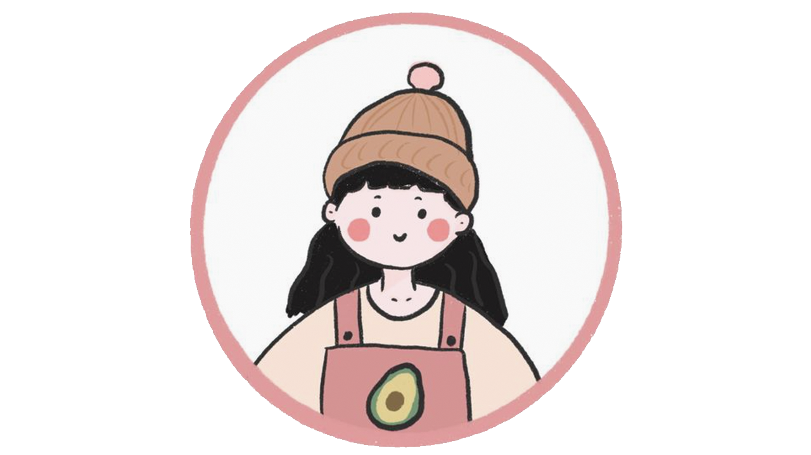

Freelancer - Start Bootstrap Theme

project
製作過程
一開始先到bootstrap網站尋找自己喜歡的模板，並且注意版本為4以上，因為在課堂時練習過模板的使用方式，因此要將模板調整成自己想要的
樣子並不會很困難，以綠色標題尋找那些程式碼是網頁的哪一區。我覺得最實用的功能是直接在預覽出的網站中，以檢查的功能，直接點選來找尋該
區域的程式碼，再回到編輯器中修改。接著就匯入前幾周在課堂中完成的作業，下拉選單及連結網頁是我覺得最簡單的，因為在課堂中很常練習。
在做課表的時候我是參考在課堂中練習過的寶可夢表格，雖然花了些時間搞懂td、tr，最後還是順利完成了。在履歷的部分，花了最久時間，
要先構想希望的網頁呈現方式，理想和現實總是存在著差距，真正製作時，會發現要以自己三腳貓的程式功夫，要做出自己想像中的網頁並不容易。
問題與挑戰
在製作網頁的過程中，使用到的上課幾乎都有教過，反而花了最多的時間在處理網頁的排版問題，尤其是自體的大小、顏色、粗細等，有許多細
節的設定，幸好幾乎都能在網路上搜尋到相關的程式碼。製作網頁的過程中，我體會到學習程式是沒有捷徑的，唯有自己動手去試，一行一行打，才能
真正地學會。雖然製作過程中，會覺得自己什麼都不會，都需要上網去搜尋，但我想這也是寫程式的快感，尤其是當自己的網頁完成的時候，真的很感
動，困難越多，也代表著解決越多的問題，提升了更多能力。我很開心自己勇敢的選了這一堂課，並且完成了第一個挑戰。希望自己未來可以更進步。